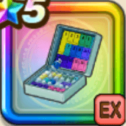

ホイポイカプセル
攻略班 9.0点 / ブルマのサポートツールボックスホイポイカプセルNo.9思いっきりいくわよ！楽しい旅にレッツゴーよ!!
くわしい特徴
【レベル別習得スキル】 Lv1攻撃力+20 Lv1スキルの斬撃・体技ダメージ+10% Lv15ブルマのサポート（消費MP：最大MPの3%）自身と右隣のキャラにステータスに応じたエールを付与した後、さくせんに応じた行動を行う(戦闘中1回のみ使用可能) Lv20ツールボックス（消費MP：40）敵全体にまれに直撃する威力400%のジバリア属性体技ダメージを与える Lv30ホイポイカプセルNo.9（消費MP：50）敵1体に900%の体技ダメージを与え仲間1人を小回復(エールの種類に応じて会心の一撃が超会心になるか全体小回復の効果を追加) Lv35けもの系へのダメージ+5% Lv40マシン系へのダメージ+5% Lv50思いっきりいくわよ！（消費MP：最大MPの3%）自身と右隣のキャラにステータスに応じたエールを付与。エール状態のキャラ同士は攻撃か回復スキル使用時にもう1人のキャラに強化効果を付与 Lv50楽しい旅にレッツゴーよ!!（消費MP：8）自身と右隣のキャラのすばやさをかなり上げる(効果2ターン) 【限界突破スキル】 1凸スキルの斬撃・体技ダメージ+7% 2凸スキルの斬撃・体技ダメージ+7% 3凸スキルの斬撃・体技ダメージ+7% 4凸スキルの斬撃・体技ダメージ+7%